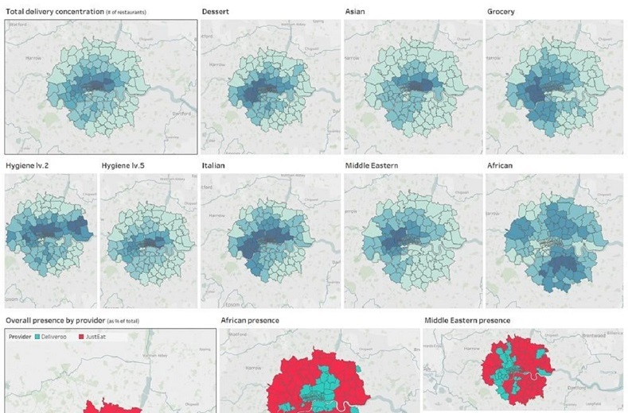
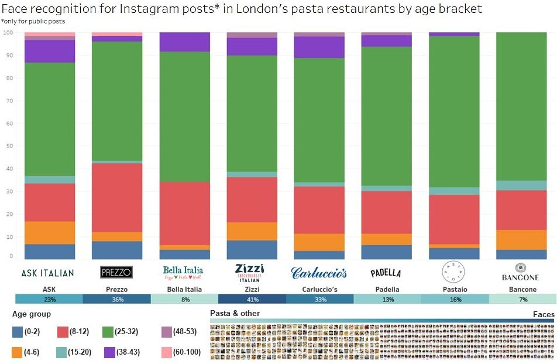
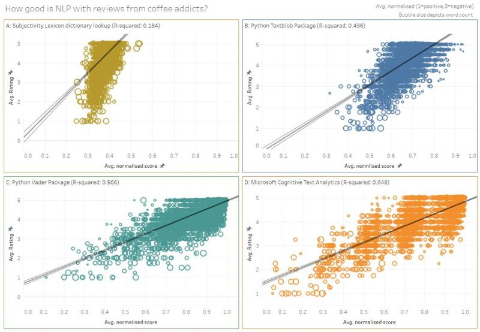
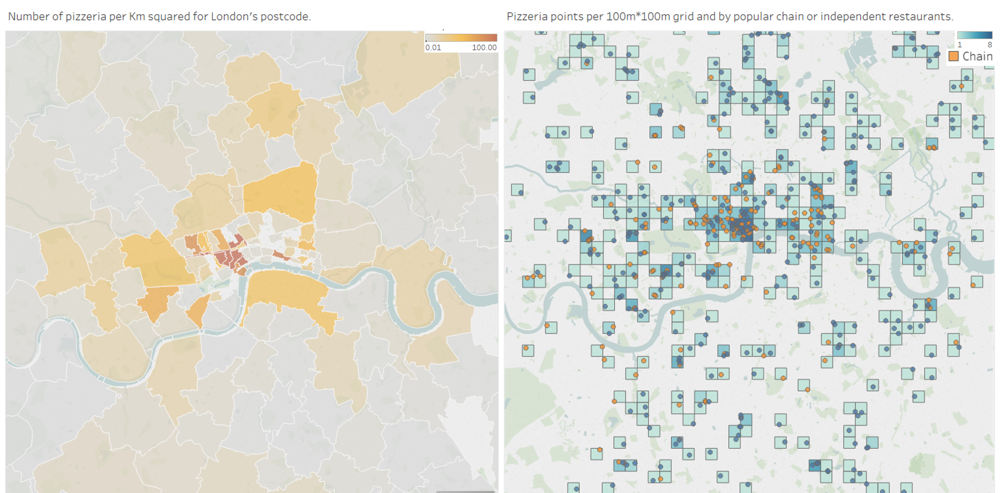

Concentration of food delivery restaurants and penetration of delivery platform players (e.g. JustEAT, Deliveroo) in London postcodes by cuisine type and postcode area.

Restaurant closures and stay-at-home means ordering food online is the closest you can currently get to a dining-out experience, making food delivery platforms the only channel of hope for kitchens to reach locked-down customers with their favourite cuisines and increasingly groceries too.
Using my own lock-down to push my #python web-scraping skills (mixing BeautifulSoup and Selenium) along with some Alteryx and Tableau Software, I aggregated data on restaurants from #JustEat and #Deliveroo to visualise across London by flavour and area.
It’s clear that external factors from where you live weigh in on your available restaurant options, will you have a range of curry or pasta kitchen choices.
The future is exciting and moving fast for these players, the prize is massive but so are competitive shoves to win more areas of London from filling cuisine gaps to pushing expanding categories. Even more exciting are the data-driven insights behind our dining behaviours fuelling ML algorithms and super-smart recommendations that these platforms will play on to win our order.
To check out the analysis on LinkedIn and comments discussion, check-out the LinkedIn post here.
Pasta & Face recognition
Customer age range and social media post trigger across London's pasta restaurants by running computer vision to identify faces and their age on Instagram posts geo-tagged to the restaurants.

Tough times for the restaurant industry mean going back to normal needs smarter innovative ways of analysing customers as they return to dine out – computer vision is more accessible than ever and can help.
I web scraped +1000 publicly posted Instagram photos across pasta restaurants in London (without commenting on their authenticity!) and run them through a pre-trained CNN face recognition model using OpenCV Python packages.
While considering the challenges in age prediction and a younger social media audience overall, some fascinating insights arise around appeal to younger professionals vs. older individuals with kids, or even the balance of food to face photos.
This just scratches the surface, imagine not only recognising faces but also menu items triggering prized social media posts.
Image content and signals from unstructured data are out there and may provide valuable insights for restaurants in the future!
International relations and political economy are some of my favourite topics to read on.
To check out the analysis on LinkedIn and comments discussion, check-out the LinkedIn post here.
Coffee sentiments
Leveraging different Natural Language Processing (NLP) methods to most accurately analyse and classify customer review sentiments compared to given star ratings.

Who here is a coffee addict? London has one of the most dense coffee landscapes so preventing coffee shop nightmares needs smart Natural Language Processing (NLP) and sentiment analytics. But how smart is NLP?
After web scraping +15,000 reviews for +4,000 coffee shops across London, I test NLP analytics options out there using #Alteryx and #Tableau and compare results to actual “out of 5 star” ratings for each review (assuming humans will logically rate their own reviews!)
A. Subjectivity Lexicon: Simple look-up mapping adjectives.
B. Textblob: Python package using Naive Bayes classifier and large training set to classify text polarity.
C. VADER: Python package mixing lexical approach with modifiers affecting emotional intensity.
D. MS Cognitive Services: Cloud-based API using multiple heavily pre-trained models.
While Microsoft's cognitive API is a winner, the open-source Python packages come close! The applications for this are endless but today unstructured consumer feedback can be digested quicker than ever. For your next cup of coffee, imagine speaking to your coffee shop phone app about how you thought it was, have it undergo NLP, and have it feedback while paying your next barista making you coffee!
To check out the analysis on LinkedIn and comments discussion, check-out the LinkedIn post here.
Pizza of London
Concentration of restaurants in the pizza segment and opportunities for whitespace expansions for pizzera in low density postcode areas.

Because pizza is important and so is data analytics, I explored the spatial landscape of delicious pizza offering in London.
Brand new pizzeria chains are competitive and quickly taking over the pizza market (think Franco Manca and Pizza Pilgrims) as the Prezzo’s and Zizzi’s find themselves in trouble.
With the help of Alteryx & Tableau, some web scraping for the top chains, and GoogleMaps API to find independent pizzeria, I created a dataset of +1000 delicious pizza points (or not – sorry Domino’s/Pizza Hut you were filtered out) in Greater London.
What areas of London are the least pizza friendly? Which neighbourhoods present a gap in pizza offering? Can upcoming hip pizzeria leverage these opportunities?
To check out the analysis on LinkedIn and comments discussion, check-out the LinkedIn post here.
Marathon Training
Locational visualisation of all my training run routes tracked by my Nike+ Run App on my iPhone while tracking distance, calories, and height. (Video only available on LinkedIn)
Today it's not just professional athlete who have the privilege of data analytics to improve performance.
Whether it's wearables, or health and running APPs, anyone can generate, track, and analyse their own progress.
Exporting exercise runs from my Nike+ Run Club in the past two years of training leading to running the London Marathon '19, I found geodata for all my runs totalling +500km distanced, +35k calories consumed, and +2,000m climbed.
How much do large sport consumer brands already leverage the valuable insights behind this data, and how will it change the way we keep fit in the future?
To check out the analysis on LinkedIn and comments discussion, check-out the LinkedIn post here.